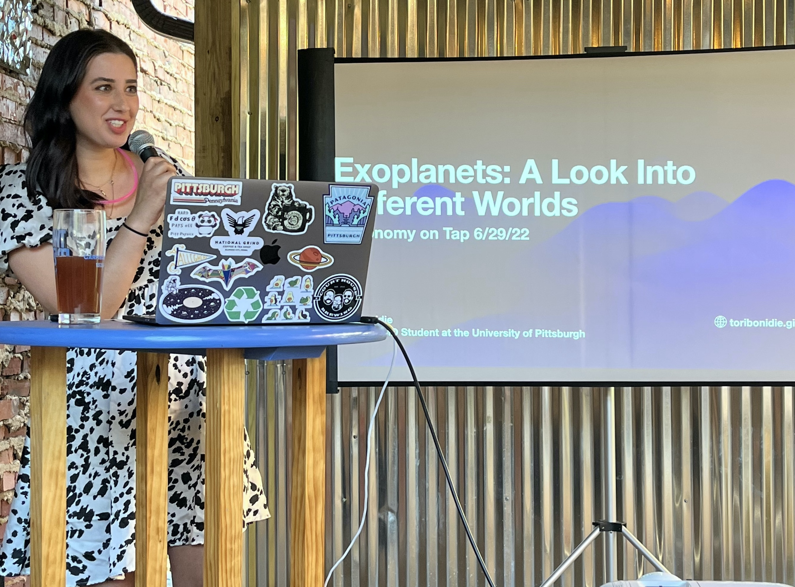

About Me
I am a 5th year PhD Candidate at the University of Pittsburgh studying the atmospheres of Ultra Hot Jupiters.
Find my earlier work on the stellar multiplicity of the Sagittarius Dwarf Spheroidal Galaxy
here!
Education:
August 2020 - Present: PhD Candidate in Physics, University of Pittsburgh
August 2016 - December 2019: BA in Astrophysics, Minor in Applied Mathematics, Franklin & Marshall College
Publications: ADS
Research
Current Projects:
I am currently exploring the atmospheric chemistry of ultra hot Jupiter, TOI-1518 b using high-resolution emission spectroscopy from the PEPSI spectrograph of the Large Binocular Telescope. I will soon be publishing our results from our atmospheric retrieval analysis, so stay tuned!
In the meantime, check out my past work!:
Multiplicity Statistics of Stars in the Sagittarius Dwarf Spheroidal Galaxy: Comparison to the Milky Way
We use time-resolved spectra from the Apache Point Observatory Galactic Evolution Experiment (APOGEE) to examine the distribution of radial velocity (RV)
variations a sample of stars identified as members of the Sagittarius (Sgr) dwarf spheroidal (dSph) galaxy by Hayes et al. (2020) and compare this distribution
to stars from the Milky Way (MW) that have the stellar parameters (log(g), Teff , and [Fe/H]) similar to those of the Sagittarius members.
We find that the shape of the distribution of RV shifts in Sgr dSph stars is similar to that measured in their MW analogs, but the total fraction
of RV variable stars in the Sgr dSph is larger by a factor of ~2, concluding that the fraction of close binaries in the Sgr dSph is intrinsically higher than in the MW.
Publication accepted by the Astrophysical Journal
Outreach and Teaching

Astrobites:
I am a firm believer that science communication is just as important as the research itself! Find my articles on Astrobites!
Teaching:
Astronomy 089 Stars, Galaxies, and the Cosmos: TA Fall 2021,24; Summer 2022,23
Physics 175 Introductory Physics 2: TA Spring 2022
Physics 011 Introductory Physics 1: TA Summer 2022,23
Contact
Email: VEB19@pitt.edu
Address: 3941 O'Hara St Office 300 Pittsburgh, PA 15213